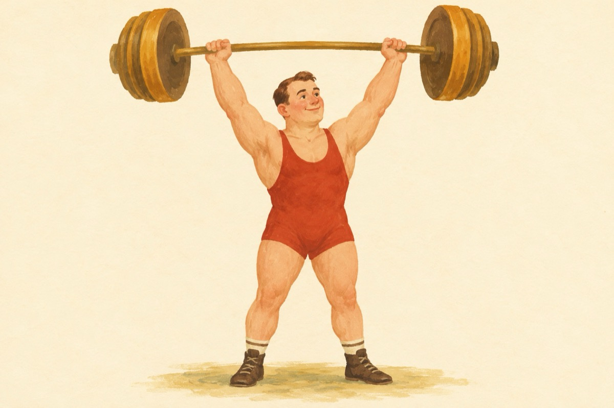

Alfabetul: Tt
T-ul e halterofil
Și din față și din profil
Ridică tone cât șapte
Și-alfabetul duce-n spate
Dacă-l învârți în eter
Poți să-l faci elicopter
Și dacă nu te ascultă
Poți să-l faci și parașută
Are tactică și stil
Când e mic e mai umil
T mic, dacă nu-i tăiat
Zici că-i "I "adevărat
De-i T mare, de-i t mic
Dară ei nu scrii nimic.
Vasile Groza